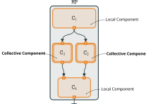
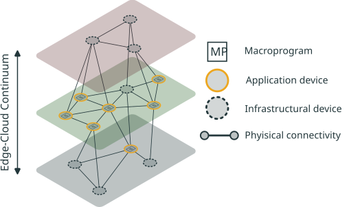

Deployment Models for Collective-Adaptive Systems
The Gap
Typical collective-adaptive systems (CAS) are deployed as if only physical devices mattered, leaving the rest of the infrastructure unused.
The edge-cloud continuum opens new deployment opportunities for CAS, enabling more dynamic and sophisticated setups.
- Current methods struggle to map swarm logic onto heterogeneous, distributed hardware.
- Runtime reconfiguration still lacks principled models.
How can we exploit the rest of the infrastructure of the continuum for efficient and smarter deployments ?
The Pulverisation Model
A declarative approach to breaking down monolithic systems into computationally independent micro-components (behaviour, state, communication, sensors/actuators).


Enabling declarative deployment planning for green, dynamic execution across edge, fog, and cloud tiers.
Runtime Self-Organisation
Global-level self-organisation approaches yielding resilient, scalable fleets.
- Proximity-aware clustering for Self-Federated Learning.
- HarmoniKt: Unifying middleware for heterogeneous robot fleets.
Impact
Moving beyond static deployments to systems that continuously adapt their topological execution footprint based on context and resource availability.